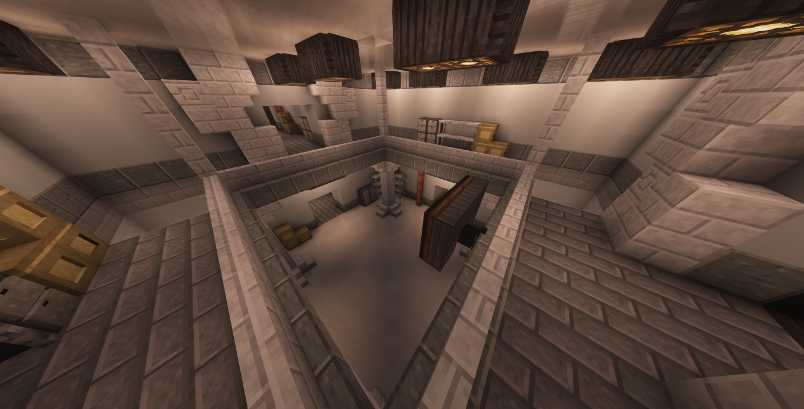
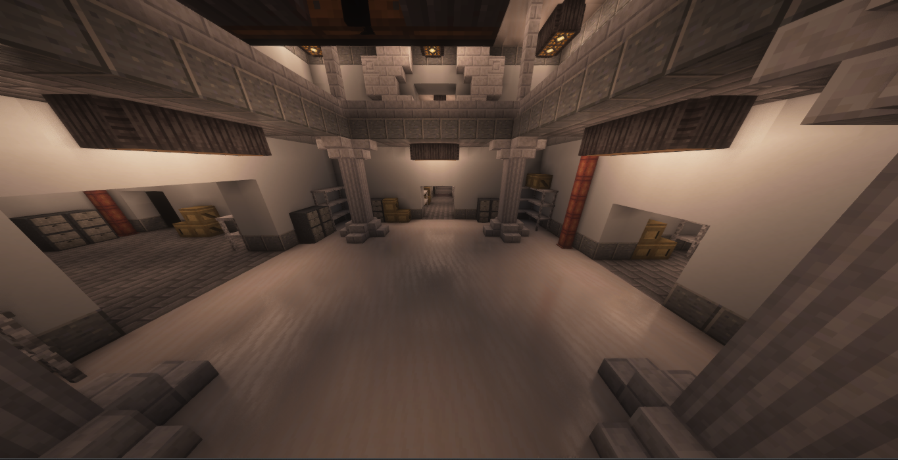

Departamento de Disciplina
O Departamento de Disciplina é responsável pela orientação comportamental, treinamento e preparo operacional dos funcionários da A.F.A no contato direto com anomalias. Seu objetivo principal é garantir que todos os agentes atuem de forma controlada, consciente e segura diante de entidades anômalas, minimizando riscos desnecessários tendo tudo sobre controle de seu líder, Hokma.
Funções
- Treinamento de novos funcionários em ambientes controlados
- Simulações e exercícios práticos com anomalias de baixo nível de contenção
- Orientação sobre protocolos de conduta e resposta a eventos anômalos
- Avaliação psicológica e comportamental básica de agentes em serviço
- Manutenção da ordem interna e prevenção de condutas imprudentes
Origem do Departamento
O Departamento de Disciplina foi oficialmente fundado após uma série de episódios de desordem interna e incidentes causados por falhas humanas durante interações com anomalias. Esses eventos evidenciaram a necessidade de um setor dedicado exclusivamente à preparação adequada dos funcionários, tanto em nível técnico quanto psicológico.
Desde sua criação, o departamento atua como um elo entre o conhecimento teórico e a prática operacional, reduzindo significativamente o número de acidentes resultantes de comportamento impróprio ou despreparo.
Atuação em Incidentes
Além de suas funções educativas, o Departamento de Disciplina desempenha um papel crucial na segurança da A.F.A. Em casos de falhas críticas, brechas de contenção ou surtos anômalos dentro das instalações, suas equipes estão entre as primeiras a serem mobilizadas.
Nessas situações, os agentes de Disciplina atuam na contenção inicial, evacuação de áreas afetadas e neutralização de ameaças imediatas, até que medidas de contenção avançadas sejam aplicadas.
Observações da A.F.A
Embora não seja classificado oficialmente como um departamento de contenção, o Departamento de Disciplina é considerado uma linha de defesa essencial da agência. Sua atuação preventiva e resposta rápida têm papel decisivo na manutenção da estabilidade interna da A.F.A.

Nome: Hokma
Idade: 49
Aniversário: 17/02
Gênero: Masculino
Cargo: Diretor de Disciplina
Trabalha na AFA desde:1999
Instalações do Departamento

